神祕谷勳章系統
探險家勳章地圖
#107 時間神殿探險家
15 個地點| 1 | 三扇門 |
| 2 | 新錄的過去 |
| 3 | 回憶之路1~5 |
| 4 | 回憶中的休息處1~4 |
| 5 | 凝視者的房間 |
| 6 | 凍結的過去 |
| 7 | 悔恨之路1~5 |
| 8 | 悔恨中的休息處1~4 |
| 9 | 魔法提煉師的房間 |
| 10 | 火燒的過去 |
| 11 | 忘卻之路1~5 |
| 12 | 忘卻中的休息處1~4 |
| 13 | 紀錄者的房間 |
| 14 | 破碎的迴廊 |
| 15 | 被遺忘的黃昏 |
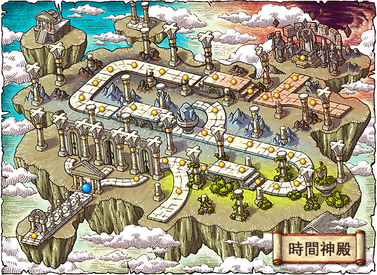
探險小提示
就是全部走一遍!
#108 維多利亞探險家
20 個地點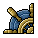
| 1 | 維多利亞港 |
| 2 | 肥肥海岸 |
| 3 | 黃金海岸 |
| 4 | 弓箭手村 |
| 5 | 菇菇公園休息處 |
| 6 | 弓箭手村東部小山 |
| 7 | 弓箭手村西部森林 |
| 8 | 魔法森林 |
| 9 | 智慧之林 |
| 10 | 魔法森林南部 |
| 11 | 大木林III |
| 12 | 魔法森林北部 |
| 13 | 勇士之村 |
| 14 | 東方岩石山VII |
| 15 | 西部岩山IV |
| 16 | 遺跡發掘隊營地 |
| 17 | 墮落城市 |
| 18 | 墮落城市北入口 |
| 19 | 小心掉落 |
| 20 | 墮落城市森林III |
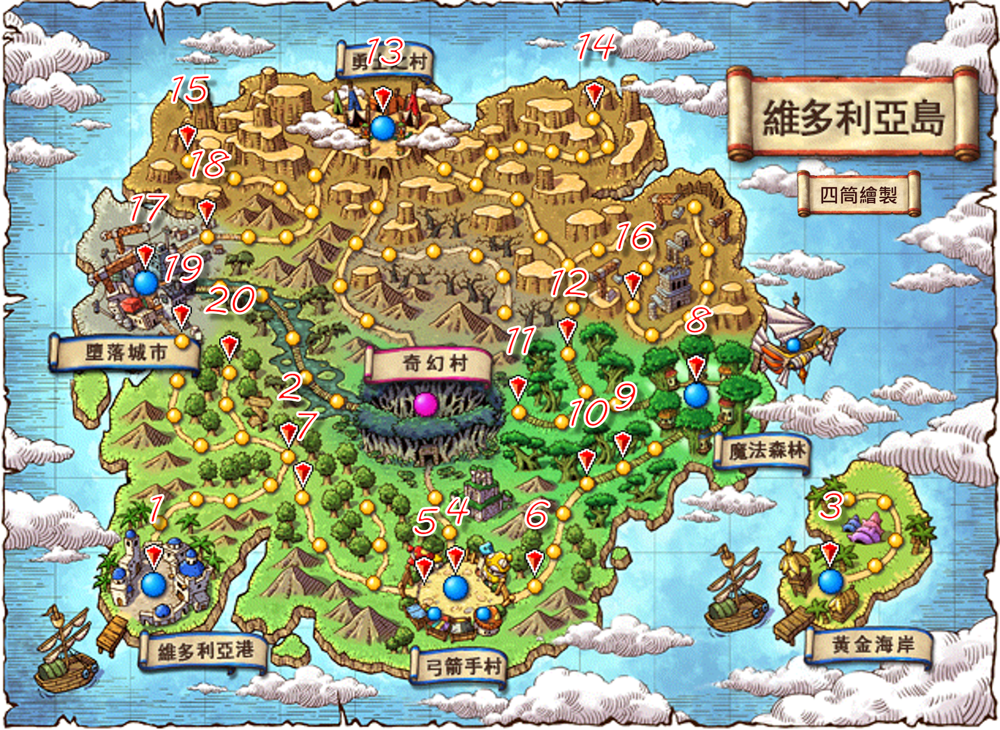
#109 冰原雪域探險家
10 個地點| 1 | 天空之城 |
| 2 | 天空之城塔門口 |
| 3 | 前往三色庭園之路 |
| 4 | 天空階梯II |
| 5 | 雲彩公園VI |
| 6 | 冰原雪域 |
| 7 | 結冰的平原I |
| 8 | 尖銳的絕壁I |
| 9 | 亡者之林II |
| 10 | 廢棄礦坑IV |
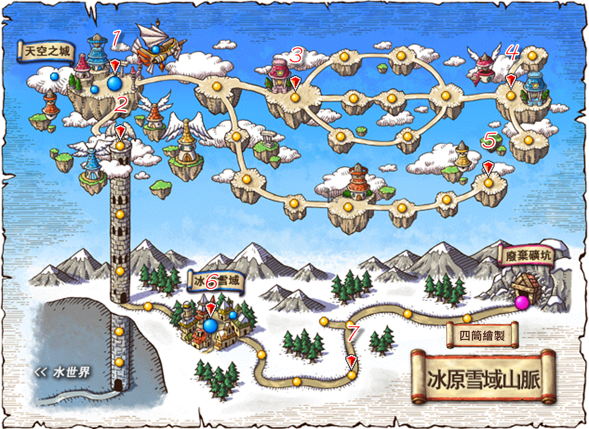
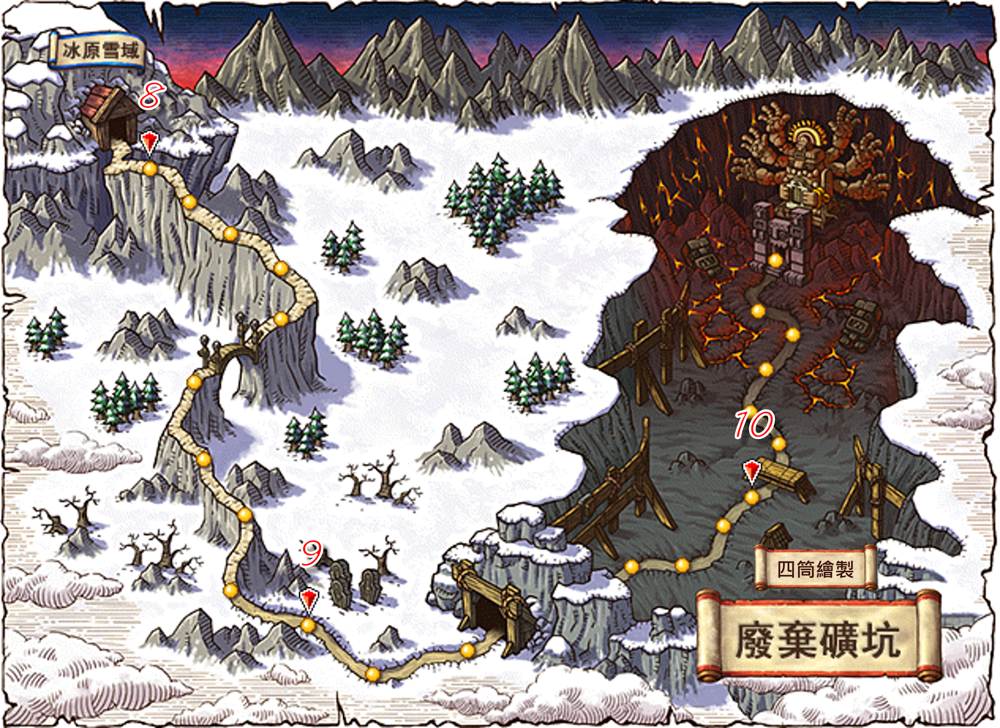
#110 路得斯湖探險家
10 個地點| 1 | 玩具城 |
| 2 | 主工程A |
| 3 | 時間分岔道 |
| 4 | 隱藏之塔 |
| 5 | 外部區域 |
| 6 | 克嵐草原V |
| 7 | 羅威草原VI |
| 8 | 赫爾奧斯塔圖書館 |
| 9 | 童話村 |
| 10 | 鬼怪山脊 |
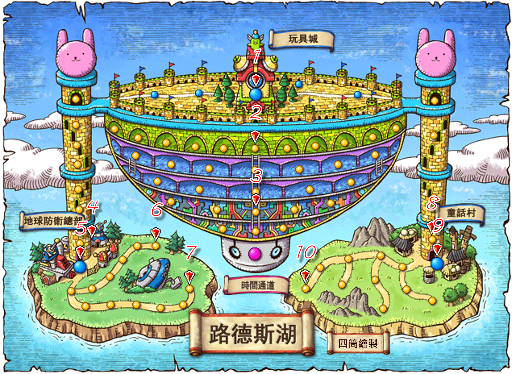
#111 水世界探險家
10 個地點| 1 | 水之都 |
| 2 | 西海岔道 |
| 3 | 紅珊瑚之林 |
| 4 | 鯨魚島 |
| 5 | 東海岔道 |
| 6 | 椰子樹林 |
| 7 | 菇菇珊瑚地 |
| 8 | 深海峽谷I |
| 9 | 危險海峽I |
| 10 | 受難船的墓地 |
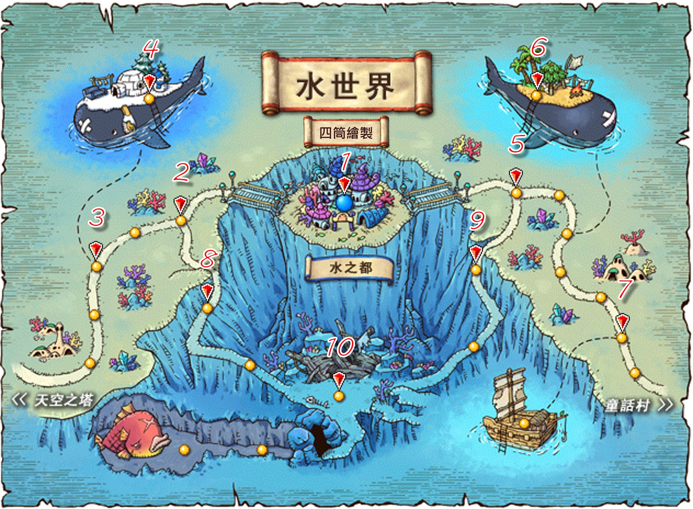
#112 武陵桃園探險家
10 個地點| 1 | 桃花仙境 |
| 2 | 上級修練場 |
| 3 | 花蛇的領土 |
| 4 | 流浪熊的領土 |
| 5 | 仙桃果園1 |
| 6 | 妖怪之林2 |
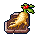
| 7 | 靈藥幻境 |
| 8 | 豐饒的藥草田 |
| 9 | 偏僻泥淖 |
| 10 | 金勾海賊團基地2 |
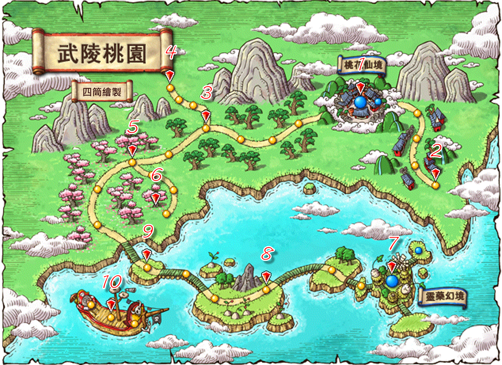
#114 米納爾森林探險家
10 個地點| 1 | 神木村 |
| 2 | 怪脾氣森林 |
| 3 | 格瑞芬多森林 |
| 4 | 天空之巢路口 |
| 5 | 噴火龍棲息地 |
| 6 | 龍森林路口 |
| 7 | 翼龍峽谷 |
| 8 | 危險的龍之巢穴 |
| 9 | 被遺留的龍之巢穴 |
| 10 | 生命之穴入口 |
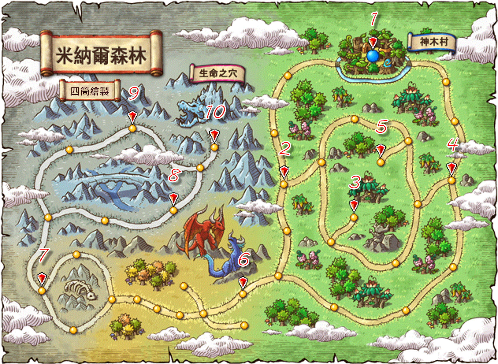
#122 楓葉島探險家
21 個地點| 1 | 菇菇村訓練所入口 |
| 2 | 嫩寶狩獵場I |
| 3 | 嫩寶狩獵場II |
| 4 | 嫩寶狩獵場III |
| 5 | 岔道 |
| 6 | 楓葉村西郊平原 |
| 6-1 | 小菇菇 |
| 6-2 | 小嫩寶 |
| 7 | 楓葉村 |
| 7-1 | 楓葉村武器店 |
| 7-2 | 楓葉村雜貨店 |
| 7-3 | 楓葉村民宅 |
| 7-3-1 | 嫩寶花園 |
| 8 | 楓葉村東郊平原 |
| 8-1 | 番茄園 |
| 8-2 | 草叢狩獵場I |
| 8-3 | 草叢狩獵場II |
| 9 | 楓之港西郊平原 |
| 9-1 | 小樹林 |
| 9-2 | 大菇菇 |
| 10 | 楓之港 |
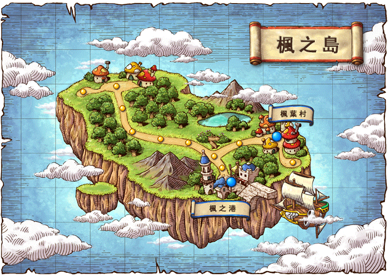
探險小提示
包含光門、商店全部走一遍就對了!
感謝4D整理! 記得去看他的影片👇
#123 奇幻村探險家
10 個地點| 1 | 奇幻村 |
| 2 | 森林迷宮V |
| 3 | 螞蟻礦坑 |
| 4 | 龍族狩獵場 |
| 5 | 另外的入口 |
| 6 | 龍穴 |
| 7 | 魔龍領土 |
| 8 | 龍族之巢 |
| 9 | 寺院通道I |
| 10 | 被詛咒的寺院 |
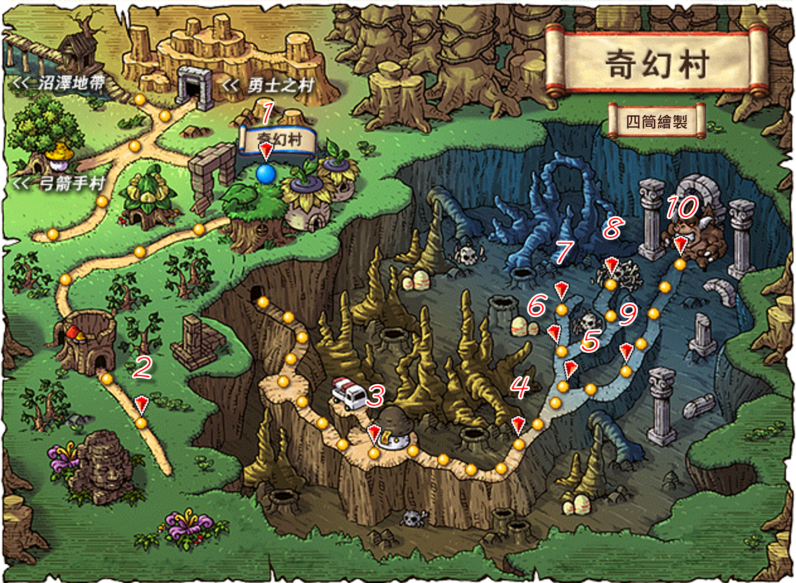
#273 亞洲背包客
22 個地點| 1 | 中心商務區 |
| 2 | 郊區1 |
| 3 | 駁船碼頭城 |
| 4 | 幽靈船7 |
| 5 | 烏魯城入口 |
| 6 | 烏魯城中心 |
| 7 | 晚安長眠 |
| 8 | 都會潮流區 |
| 9 | 鄉村鎮 |
| 10 | 夢幻樂園入口 |
| 11 | 夢幻樂園4 |
| 12 | 古代神社 |
| 13 | 雲狐山坡 |
| 14 | 天皇殿堂 |
| 15 | 烏鴉樹林1 |
| 16 | 烏鴉樹林2 |
| 17 | 彎曲地獄路 |
| 18 | 與大佛的邂逅 |
| 19 | 昭和商店街 |
| 20 | 昭和內部街道2 |
| 21 | 城堡走廊(商人) |
| 22 | 城堡走廊(直助) |
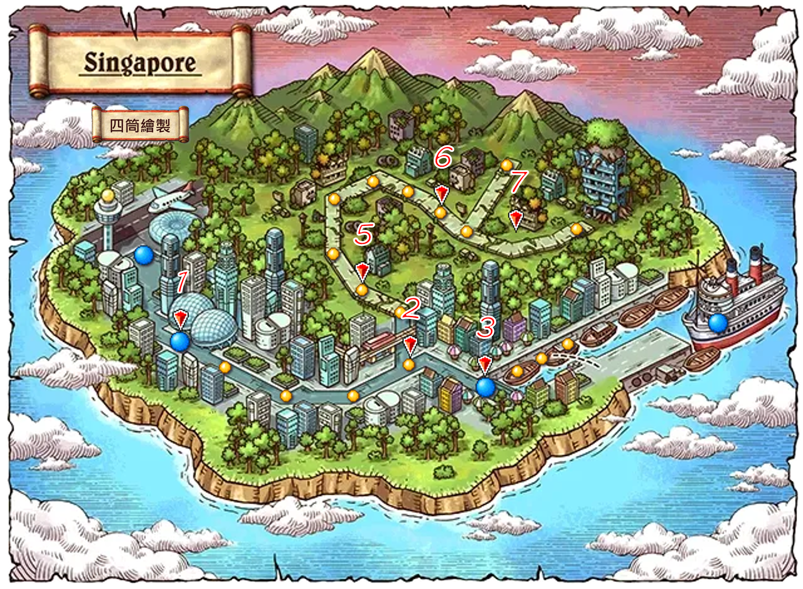
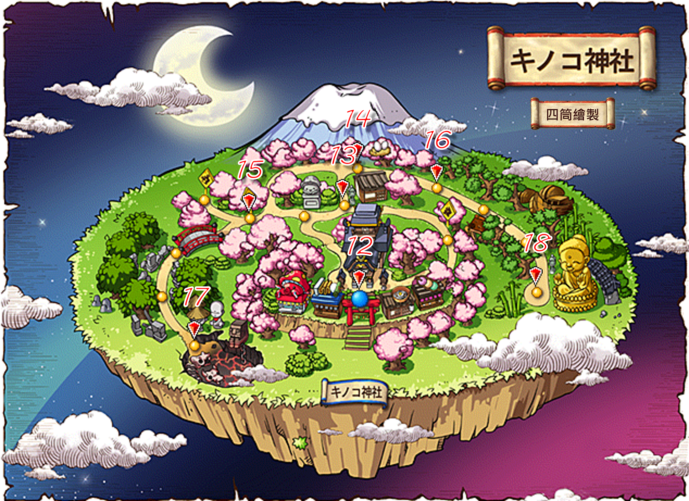
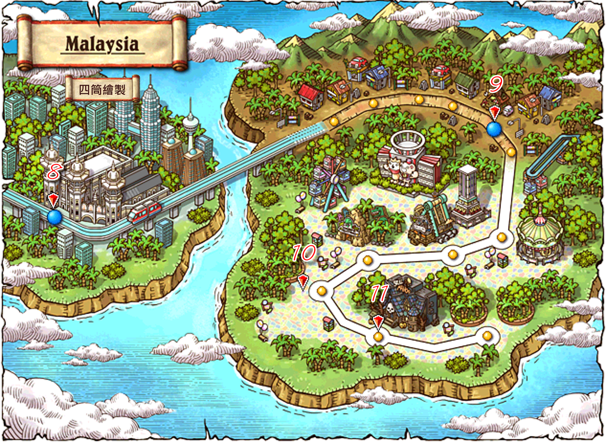
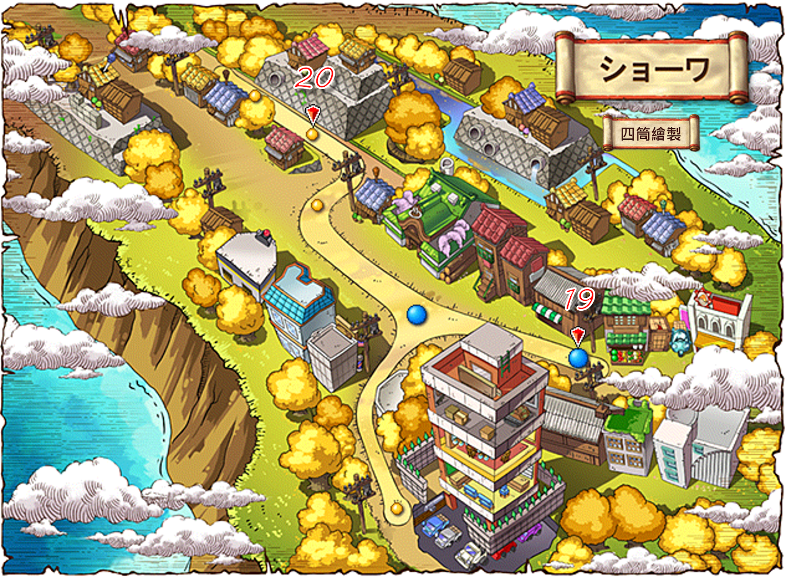
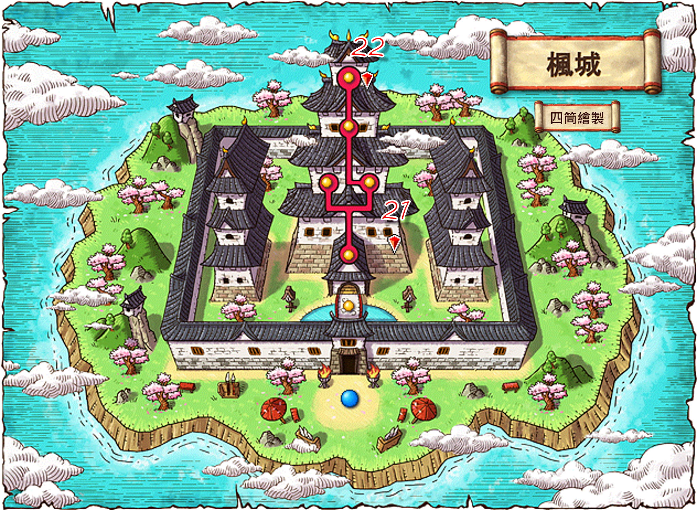
探險小提示
這個盤點超辛苦! 感謝4D讚嘆4D! 去看他的影片!👇
#388 無所畏懼
16 個地點| 1 | 沼澤中的沼澤 |
| 2 | 幻影之路 |
| 3 | 蔓延的邪惡 |
| 4 | 隱藏的邪惡 |
| 5 | 邪惡的盡頭 |
| 6 | 恐懼洞穴 |
| 7 | 疼痛洞穴 |
| 8 | 榮譽洞穴 |
| 9 | 羞恥洞穴 |
| 10 | 兼任洞穴 |
| 11 | 勇氣洞穴 |
| 12 | 風暴廳 |
| 13 | 龍捲風走廊 |
| 14 | 地獄火的房間 |
| 15 | 憤怒的夜晚 |
| 16 | 大廳到密室的路 |
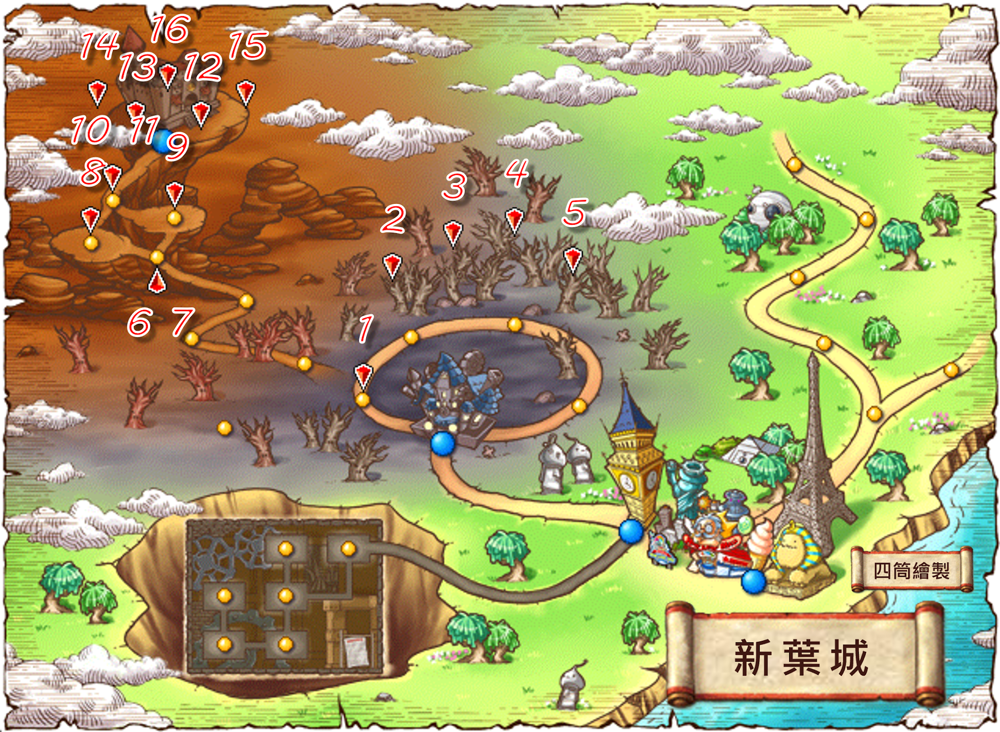
探險小提示
感謝4D整理! 看他的影片照著跑比較快👇